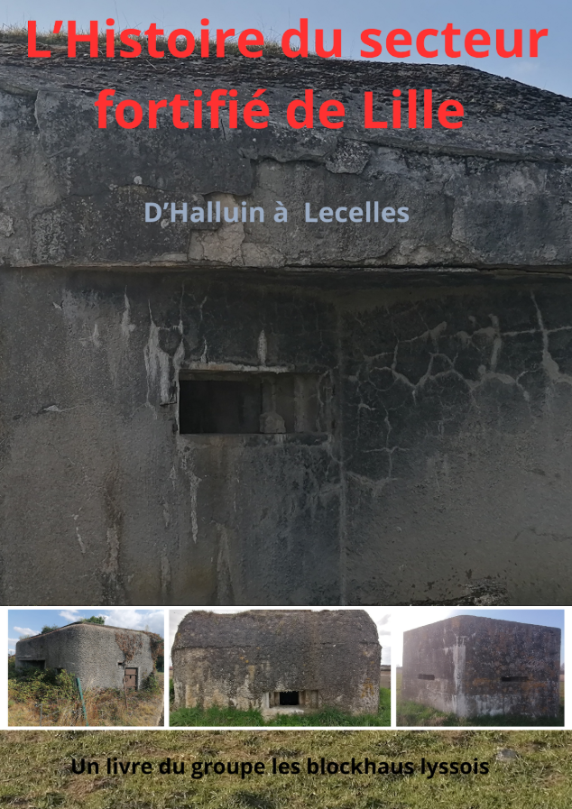
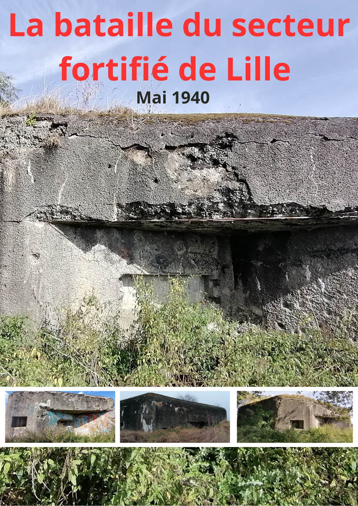

un ouvrage sur l'histoire de Lys Lez Lannoy et de ses environs pendant la débàcle de 1940.
Découvrez l'histoire de Lys Lez Lannoy et de ses environs pendant la débàcle de 1940. Ce livre vous emmène à la découverte de ce secteur pendant une période cruciale de l'histoire de France.
Auteur : Groupe Les Blockhaus Lyssois • Format : 72 pages
Titre : Lys Lez Lannoy et ses allentours dans la débàcle de 1940
Auteur : Groupe Les Blockhaus Lyssois
Pages : 72

Un ouvrage de référence sur la construction, la vie et la mémoire du secteur fortifié de Lille.
Plongez au cœur de l'histoire avec "L'histoire du Secteur Fortifié de Lille". Cette brochure vous emmène à la découverte de ce secteur de la ligne Maginot. Explorez les stratégies de défense, richement illustré de plans et de photographies.
Ce guide vous révèle les secrets des casemates qui ont protégé Lille. Un voyage passionnant pour les amateurs d'histoire, les passionnés de patrimoine et tous ceux qui souhaitent percer les mystères de cette partie de la ligne Maginot.
Auteur : Groupe Les Blockhaus Lyssois • Format : 40 pages
Titre : L'histoire du secteur fortifié de Lille
Auteur : Groupe Les Blockhaus Lyssois
Pages : 40

Une suite détaillée: la bataille oubliée du secteur fortifié de Lille.
Celui-ci est une suite de notre livre "L'histoire du secteur fortifié de lille". Cette brochure a pour vocation d'offrir le plus de détails sur ce que l'on a appelé "la bataille du secteur fortifié de lille" (trop peu expliquée dans notre précédent livre).
Une bataille inconnue et qui ne figure dans aucun livre. Une bataille trop oubliée, du fait de sa rapidité. Une bataille enfin racontée !
Auteur : Groupe Les Blockhaus Lyssois • Format : 35 pages
Titre : La bataille du secteur fortifié de Lille
Auteur : Groupe Les Blockhaus Lyssois
Pages : 35